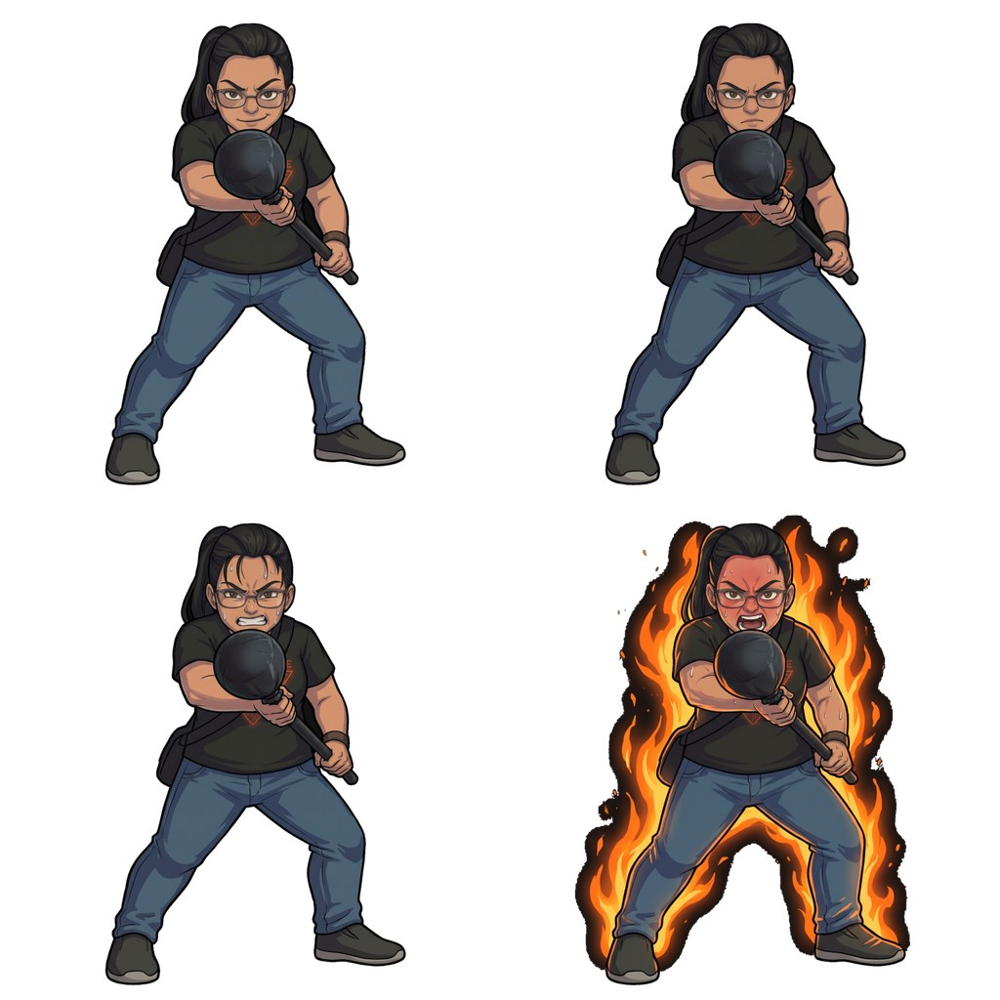

❤️
100 / 100
🔊
⚙️
Lv.1 輕浮微笑
SURVIVAL TIME
00.00
s
呵呵～來囉！
⚡ 街機反應極限挑戰 ⚡
彭彭大槌王
平衡木九宮格・生死格擋戰

BOSS：高額頭馬尾黑槌女王
🎯
紅框亮起預警
：注意九宮格哪一格亮起紅圈、黑槌正在推進放大！
🪵
點擊拿木板格擋
：在黑槌填滿圓圈前，點擊該格舉起木板擋下攻擊！
🔥
四段難度暴走
：從輕浮微笑到「吼拉吼拉」脹紅臉連擊，看你能撐幾秒！
🪵 舉起木板・開始挑戰！
⚙️ 調整難度與反應秒數設定
K.O. 頭目獲勝！
你被黑槌推下平衡木了！
📱 手機可直接點擊下方「分享戰績圖」或長按上方圖片儲存
📤 分享戰績截圖給朋友
💾 下載圖片
🔄 再戰一場
⚙️ 遊戲難度與人類反應秒數設定
✕
可隨時微調各階段黑槌推進速度、血量與原音開關，調完立即生效：
玩家被擊中幾次陣亡（總耐打次數）：
6 次
Lv.1 初期（微笑）黑槌推進秒數：
1.00 秒
Lv.2 二級（嚴肅）黑槌推進秒數：
0.75 秒
Lv.3 三級（出力）黑槌推進秒數：
0.55 秒
Lv.4 四級（脹紅臉吼拉）黑槌推進秒數：
0.36 秒
進入 Lv.4 暴走必死階段的秒數：
25 秒
背景音樂 (BGM) 音量：
18%
頭目改用影片真人原音（預設為中文配音）